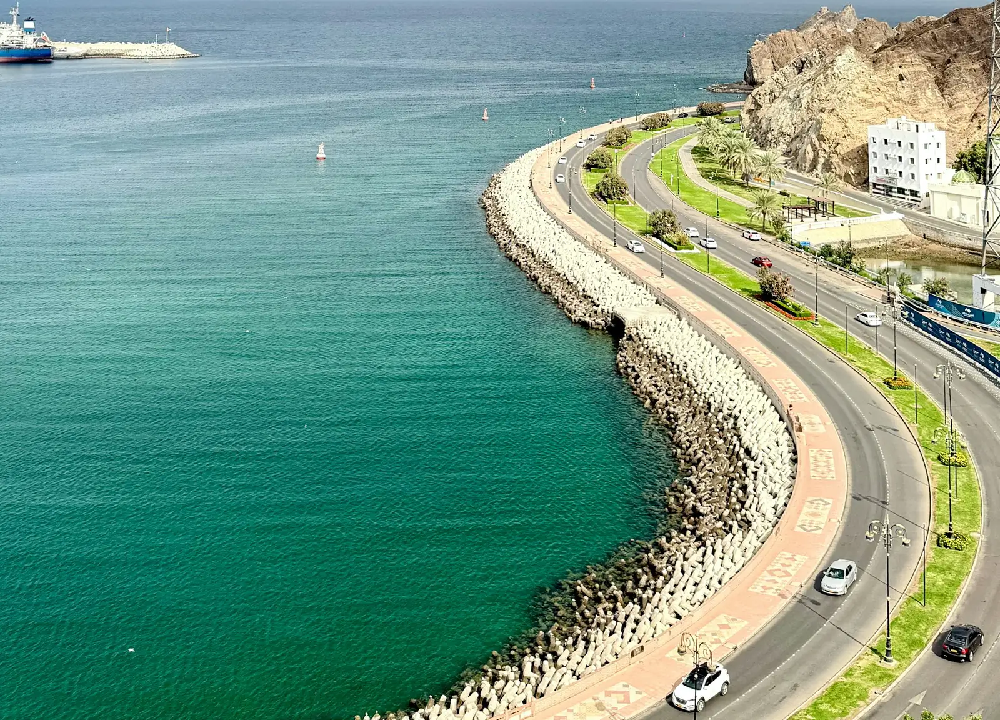

عن المسكري
“People are our business.”«الناس هم أساس عملنا»، من رسالة المدير العام Amar Suleiman Said Al Maskry
شركة المسكري وشريكه (Al Maskry & Partner Co. LLC) من أقدم شركات تأجير السيارات والتأجير طويل المدة في سلطنة عُمان، ولديها كذلك قسم للنقل وخدمات للسياحة الوافدة.

لمن نعمل
نقدّم تأجير السيارات والتأجير طويل المدة وخدمات السفر للأفراد والشركات. وجزء من عملنا لعملاء مميزين: كبرى الشركات والمؤسسات، ورجال الأعمال الدوليين، والسيّاح القادمين إلى سلطنة عُمان.
أسطولنا يبدأ من سيارات الصالون التنفيذية إلى السيارات الفاخرة وسيارات الدفع الرباعي والبيك أب التجارية. وخيارات التأجير المرنة والصيانة الشاملة والمساعدة على الطريق على مدار الساعة موجودة لتحصل على قيمة أكبر من كل إيجار.
ولدى المسكري قسم نقل بأسطول من الحافلات بسعة 14 و25 و30 و60 راكباً.
رسالة المدير العام
الرسالة منشورة بالإنجليزية، وننقلها هنا كما هي.
“As I look ahead, I am excited about the progress of tourism in Oman and the future for Al Maskry Travel & Tourism. The facilities available to our visitors to Oman continue to improve. With this, we are able to provide a better Omani Experience. As a native Omani, I am committed to promote the Sultanate of Oman as one of the worlds leading tourist destinations.
As Managing Director, leading our franchise forward, I will listen to our customers and look forward to working with my staff. People are our business. Without well-trained, informed and motivated staff we will have no service to run. Without our customers, we cannot sustain the running costs of the business. Therefore delivery of a quality service is paramount and first recognizes the value of both staff and customers in this.
As the Managing Director of Al Maskry & Partner Co. LLC, I am also committed to making sure that every client has an outstanding experience with Al Maskry.”